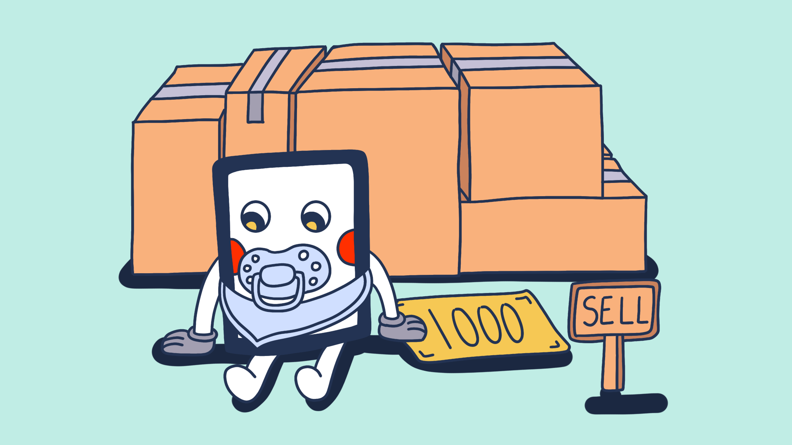
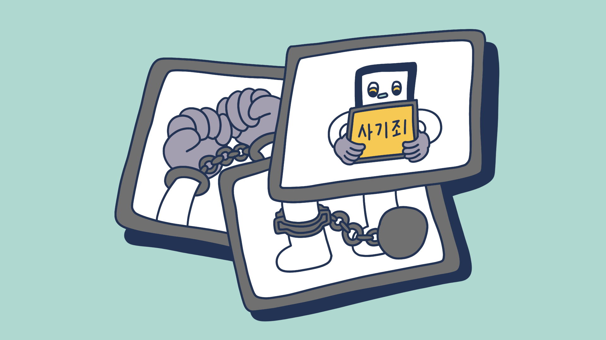

입금전 꼭 확인해야 하는 중고거래 체크리스트
1.내가 사려는 물품의 가격이 시세보다 훨씬 저렴하다
2.핸드폰 번호를 주지 않는다 (카카오톡 아이디X)
1: 절대로 시세보다 너무 저렴한 가격의 물건은 한번쯤은 의심해 보는것이 중요합니다. 특히나 너무 좋은 가격이지만 오래
팔리지 않는다면 99% 사기라고 보는것이 좋습니다.
2.핸드폰 번호를 주지 않는 경우 자신의 신원 확인을 못하게 하기 위함이다. 특히 sns및 외부 채팅 앱으로 유도하는 경우 안전거래 사기로 이어지는 경우가 많습니다.
2.핸드폰 번호를 주지 않는 경우 자신의 신원 확인을 못하게 하기 위함이다. 특히 sns및 외부 채팅 앱으로 유도하는 경우 안전거래 사기로 이어지는 경우가 많습니다.
입금전 꼭 확인해야 하는 중고거래 체크리스트

3.판매자의 계정이 생성된지 얼마 지나지 않았다
4.계좌 입금명과 실제 신분증 이름이 동일하지 않는다
3.계정이 생성된지 얼마 지나지 않았는데 값비싼 물건들을 많이 팔고 있다면 한번쯤 의심해 보는것이 좋습니다. 특히 지역 인증,
핸드폰,계좌인증 등 본인인증이 제대로 되어있지 않은 경우 거래를 조심하는것이 좋습니다
4.금액 입금 전에 받은 입금명과 신분증, 본인 이름과 동일하지 않는다면 대포통장인 경우가 있습니다. 나중에 피해복구에 있어서 불리함이 있을수가 있습니다.
4.금액 입금 전에 받은 입금명과 신분증, 본인 이름과 동일하지 않는다면 대포통장인 경우가 있습니다. 나중에 피해복구에 있어서 불리함이 있을수가 있습니다.
입금전 꼭 확인해야 하는 중고거래 체크리스트

5.선입금을 요구한다
6.안전거래 요구에 응하지 않는다
5. 선입금을 요구하는 경우에는 물건을 받기 어려울 수가 있습니다. 선입금을 해야하는 비싼 제품들이나 상품권의 경우
에는 택배거래 보다는 직거래를 하는것을 추천합니다.
6.안전거래의 경우에는 판매자 입장에서 받는 피해는 하나도 없습니다. 그런데도 안전거래 요구에 응하지 않는 경우는 안전한 거래가 아닌것을 증명합니다.
6.안전거래의 경우에는 판매자 입장에서 받는 피해는 하나도 없습니다. 그런데도 안전거래 요구에 응하지 않는 경우는 안전한 거래가 아닌것을 증명합니다.
입금전 꼭 확인해야 하는 중고거래 체크리스트
7.직거래 가능 장소가 접근성이 떨어지는 외지이다
8.영상통화로 물건을 확인시켜주지 않는다
7.직거래 가능 장소가 외지인 경우에는 찾아오지 못하게 만드는 것일수도 있습니다. 물론 실제로 외지에 살고있을수도 있지
만 외지까지 찾아갈수 있다고 하였는데 거절하는 경우에는 사기일 확률이 높습니다.
8.영상통화 동영상 등으로 물건과 인증을 요구했는데도 바쁘다는 핑계로 해주지 않는 경우에는 사기일 확률이 높습니다. '중고나라론'같이 물건이 없이 하는 사기일 확률이 높습니다
8.영상통화 동영상 등으로 물건과 인증을 요구했는데도 바쁘다는 핑계로 해주지 않는 경우에는 사기일 확률이 높습니다. '중고나라론'같이 물건이 없이 하는 사기일 확률이 높습니다
입금전 꼭 확인해야 하는 중고거래 체크리스트

9.더치트, 경찰청 사이버 안전국 등 범죄결과가 조회된다
9. 핸드폰 계좌번호를 더치트와, 경찰청 사이버 안전국등의 범죄결과가 조회되는 경우에는 곧바로 거래를 중단해야 합니다.
판매자가 전 핸드폰 주인 때문에 생긴 범죄결과라고 이야기 하는 경우에도 빠르게 거래를 중단해야 합니다.
그 거래 그만!
위의 체크리스트 중 6개 이상이라면
일단은 의심해 보는게 좋습니다
일단은 의심해 보는게 좋습니다
미리알고 예방하자:
이 체크리스트만 통과해도 90%의 사기를 방지할수 있습니다